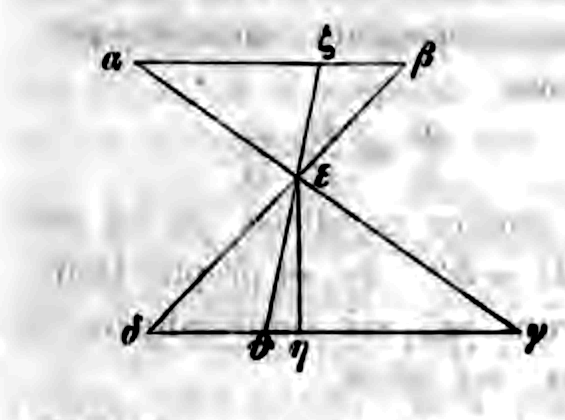

Proposition 3: Similar Centroid Triangles¶
Synagoge Book VIII, Propositions 3–4 (Hultsch III, pp. 1040–1048) · Critical English Edition


For if not, let it be the line through Ζ, Ε, Η. Since, then, as ΑΖ is to ΓΗ, so is ΖΕ to ΕΗ, and as ΖΕ is to ΕΗ, so is ΖΒ to ΗΔ, therefore as ΑΖ is to ΓΗ, so is ΖΒ to ΗΔ; and alternately as ΑΖ is to ΖΒ, that is as ΓΘ is to ΘΔ, so is ΓΗ to ΗΔ, which is impossible; therefore the line through points Ζ, Ε, Θ is straight.
Let it be done; therefore the straight line drawn through Δ and the center of gravity of the trapezium will be perpendicular to the horizon and to ΒΓ. Let it be ΔΛ, and let ΔΛ be bisected at Ε, and ΑΒ at Ζ,
f. 0051 · p. 1042and let ΓΕΖ be joined, and let ΓΕ be cut at Θ so that ΓΘ is double ΘΕ, and let ΕΖ be bisected at Η, and let ΗΘ be joined cutting ΔΛ at Κ; therefore Η is the center of gravity of parallelogram ΒΔ, and Θ is the center of gravity of triangle ΓΔΛ; therefore the center of gravity of the whole trapezium is on ΗΘ. But it is also on ΔΛ; therefore Κ is the center of gravity of trapezium ΑΒΓΔ. But the center of parallelogram ΒΔ is Η, and of triangle ΔΛΓ is Θ; therefore as parallelogram ΒΔ is to triangle ΔΓΛ, so is ΘΚ to ΚΗ. For if by way of trial we conceive the entire weight of parallelogram ΒΔ to be collected at Η, and the entire weight of triangle ΓΔΛ to be collected at Θ, ΗΘ becomes as it were a balance, with the aforesaid weights at its extremities. And if ΗΘ be cut at Κ so that as the weight at Η is to that at Θ, that is parallelogram ΒΔ to triangle ΓΔΛ, so is straight line ΘΚ to ΚΗ according to the reciprocal ratio of the weights on balances, Κ will be the point from which the weights will balance [so that ΑΒΓΔ too will balance from Κ]. Now let ΗΜ and ΘΝ be drawn perpendicular from Η, Θ onto ΒΓ. Since, then, as parallelogram ΒΔ is to triangle ΓΔΛ, so is ΘΚ to ΚΗ, while as the parallelogram is to the triangle, so is ΒΛ to the half of ΛΓ, and as ΚΘ is to ΚΗ, so is ΝΛ
f. 0053 · p. 1044to ΛΜ because ΗΚΘ and ΜΛΝ have been drawn through to parallels ΗΜ, ΕΛ, ΘΝ, therefore also as ΒΛ is to the half of ΛΓ, so is ΝΛ to ΛΜ, which is half of ΒΛ; and therefore as ΒΛ is to the double, that is to ΛΓ, so is ΛΝ to the double of ΜΛ, that is to ΒΛ; therefore the square on ΒΛ is equal to the rectangle contained by ΓΛ, ΛΝ. [Therefore as ΓΛ is to ΛΒ, so is ΒΛ to ΛΝ.] And as ΓΛ is to ΛΝ, so is the square on ΓΛ to the square on ΒΛ. And ΓΛ is triple ΛΝ (since ΓΕ is triple ΕΘ; for ΓΘ is double ΕΘ); therefore the square on ΓΛ is triple that on ΛΒ. And Β, Γ are given; therefore Λ is given, so that Δ is also given. Wherefore cutting ΒΓ at Λ so that the square on ΓΛ is triple that on ΛΒ, we shall have point Δ of suspension. ΒΓ is cut thus:
Let straight line ΑΔ be cut at Γ so that ΑΓ is triple ΓΔ, and upon ΑΔ let semicircle ΑΒΔ be described, and from Γ perpendicular to ΑΔ let ΓΒ be drawn, and let it be made as ΑΓ is to ΓΒ, so ΑΕ to ΔΕ; [to prove] that ΑΕ is triple ΔΕ in square.
Since ΒΓ is a mean proportional between ΑΓ, ΓΔ, therefore as ΑΓ is to ΓΔ, so is the square on ΑΓ to the square on ΒΓ, that is the square on ΑΕ to the square on ΔΕ; therefore ΑΕ is triple ΔΕ in square.
Similarly straight line ΑΔ and every given straight line will also be cut in the given ratio in square.
f. 0055 · p. 1046Let ΑΓ be bisected at Ε, and let joined ΔΕ be cut at Ζ so that ΕΖ is a third part of ΕΔ; therefore Ζ is the center of gravity of triangle ΑΓΔ (for this has been proved before). Now let ΖΗ be drawn parallel to ΑΕ, and let ΑΘ be a third part of ΑΒ. And ΑΗ is also a third part of ΑΔ, since ΕΖ is of ΕΔ; and the remainder ΘΗ is therefore a third part of ΒΔ. Now the ratio of ΒΔ to ΑΓ is given [and of ΑΓ to ΖΗ; for it is triple it, since ΔΑ is sesquialter of ΔΗ, that is ΑΕ of ΖΗ, and ΓΑ is double ΑΕ]; therefore the ratio of ΗΘ to ΗΖ is also given. And the angle at Η is given (for so is that at Α); therefore angle ΗΘΖ is also given. And Θ is given; therefore straight line ΘΖ is given in position, and center Ζ is upon it.
15. Now these and such things belong to theory, while those that can also fall into mechanical utility would be of this sort.